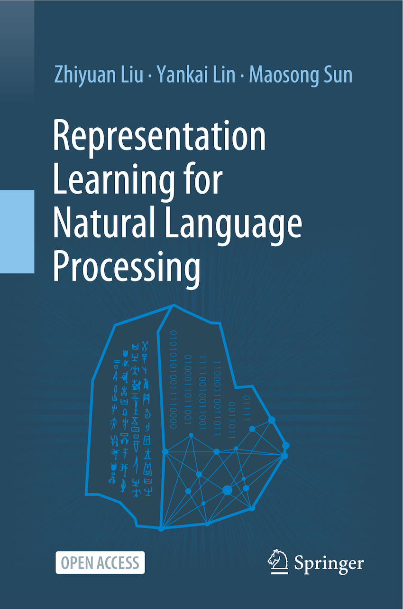

|  |
Representation Learning for Natural Language Processing
Authors: Zhiyuan Liu, Yankai Lin, Maosong Sun
Springer, July 2020. 334 pages.
Links: [Publisher][Download (Open Access)]
Welcome comments and suggestions: liuzy@tsinghua.edu.cn
|
Abstract
This open access book provides an overview of the recent advances in representation learning theory, algorithms and applications for natural language processing (NLP). It is divided into three parts. Part I presents the representation learning techniques for multiple language entries, including words, phrases, sentences and documents. Part II then introduces the representation techniques for those objects that are closely related to NLP, including entity-based world knowledge, sememe-based linguistic knowledge, networks, and cross-modal entries. Lastly, Part III provides open resource tools for representation learning techniques, and discusses the remaining challenges and future research directions.
The theories and algorithms of representation learning presented can also benefit other related domains such as machine learning, social network analysis, semantic Web, information retrieval, data mining and computational biology. This book is intended for advanced undergraduate and graduate students, post-doctoral fellows, researchers, lecturers, and industrial engineers, as well as anyone interested in representation learning and natural language processing.
Authors
- Zhiyuan Liu is an associate professor in the Department of Computer Science and Technology, Tsinghua University. He got his B.E. in 2006 and his Ph.D. in 2011 from the Department of Computer Science and Technology, Tsinghua University. His research interests are natural language processing and social computation. He has published over 60 papers in international journals and conferences, including IJCAI, AAAI, ACL, and EMNLP.
- Yankai Lin is a researcher at the Pattern Recognition Center, Tencent Wechat. He received his Ph.D. degree in Computer Science from Tsinghua in 2019. His research interests include representation learning, information extraction and question answering. He has published more than 10 papers at international conferences, including ACL, EMNLP, IJCAI and AAAI. He was named an Academic Rising Star of Tsinghua University and a Baidu Scholar.
- Maosong Sun is a Professor at the Department of Computer Science and Technology and the Executive Vice Dean of the Institute for Artificial Intelligence, Tsinghua University. His research interests include natural language processing, machine learning, computational humanities and social sciences. He is the chief scientist of the National Key Basic Research and Development Program (973 Program) and the chief expert of various major National Social Science Fund of China projects. He has published over 100 papers at leading conferences and in respected journals. He is the Director of Tsinghua University-National University of Singapore Joint Research Center on Next Generation Search Technologies, and the editor-in-chief of the Journal of Chinese Information Processing. He received the Nationwide Distinguished Practitioner award from the State Commission for Language Affairs, People’s Republic of China, in 2007, and the National Excellent Scientific and Technological Practitioner award from the China Association for Science and Technology in 2016.
Table of Contents
- Preface
- Acknowledgments
- Chapter 1: Representation Learning and NLP
- Chapter 2: Word Representation
- Chapter 3: Compositional Semantics
- Chapter 4: Sentence Representation
- Chapter 5: Document Representation
- Chapter 6: Sememe Knowledge Representation
- Chapter 7: World Knowledge Representation
- Chapter 8: Network Representation
- Chapter 9: Cross-Modal Representation
- Chapter 10: Resources
- Chapter 11: Outlook
Last update: 04 July, 2020.